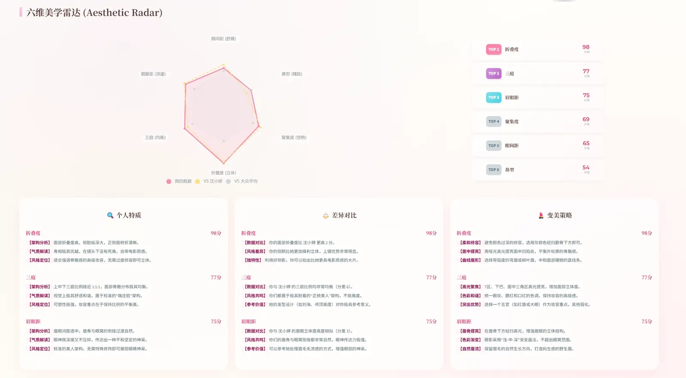
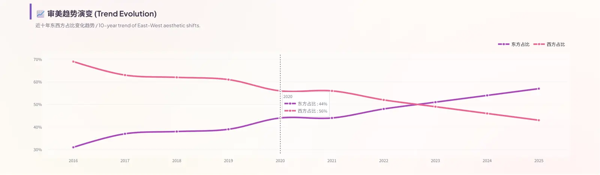
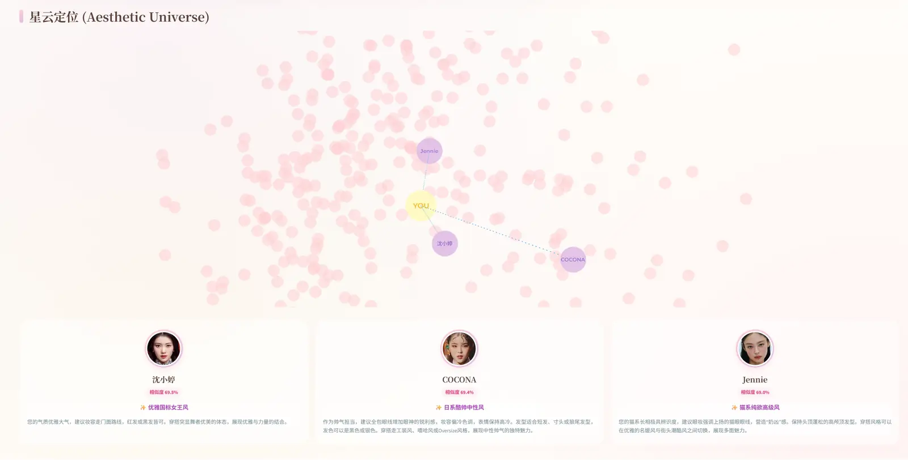
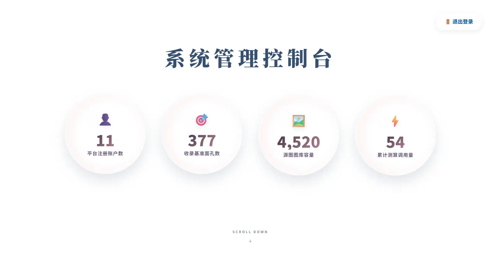
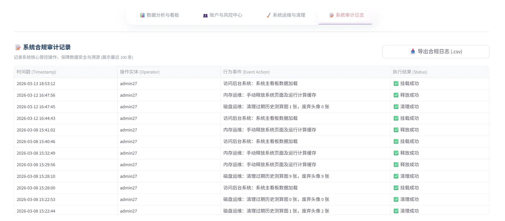
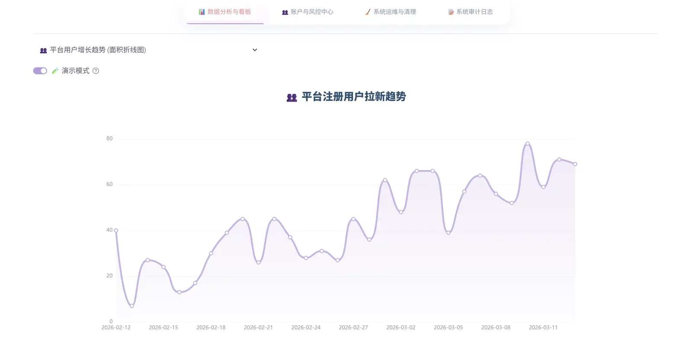

FaceBeauty - 个人项目介绍Portfolio 04 / Independent Project
个人独立搭建项目介绍 / Core System
FaceBeauty
我独立完成 FaceBeauty 审美分析系统，负责数据采集、模型接入、后端接口、管理后台和前端交互。
数据采集与分析：使用爬虫获取数据，完成清洗、统计分析和可视化，并制作交互式数据看板。
面部特征模型：将深度学习模型接入系统，输出面部特征分析和个性化建议。
前后端开发：独立完成数据处理、后端接口、管理后台和用户端界面，并完成联调。
Product Demo16:9 / Video
Watch the case
Speed
0→1独立完成系统搭建
Full-stack前端 / 后端 / 数据
AI Vision面部特征分析
Dashboard交互可视化
Interface ExhibitionClick any screen to inspect
系统覆盖登录、测算、分析报告、个性化建议、趋势看板和后台管理，可查看完整操作流程。
完成设计，
也完成了开发与联调。
按住胶片可拖拽User journeyAnalysisOperation





